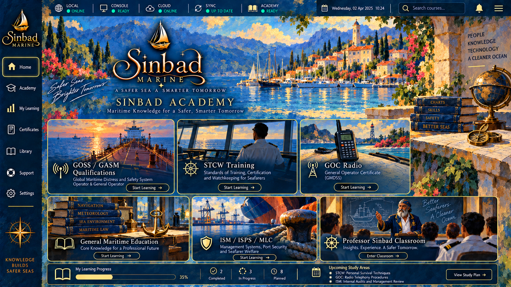
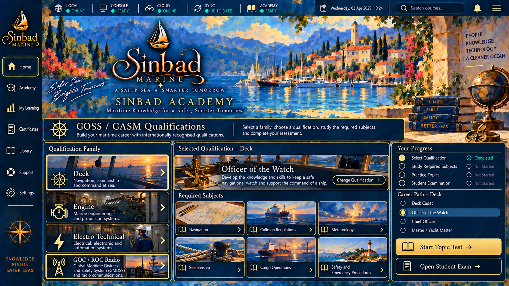
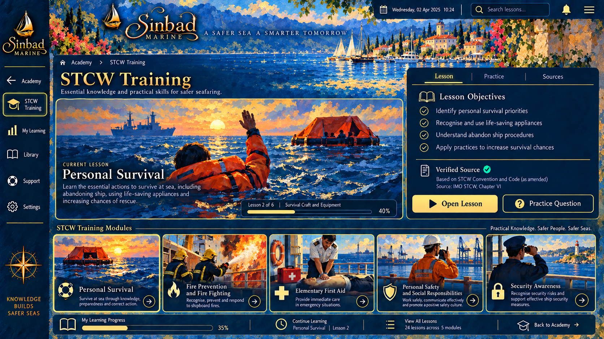
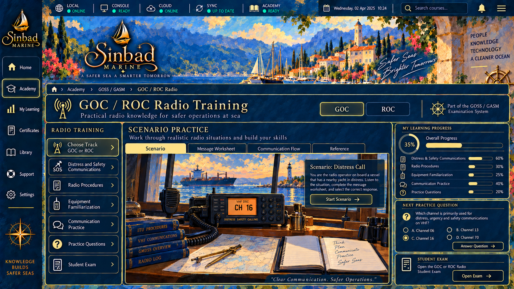
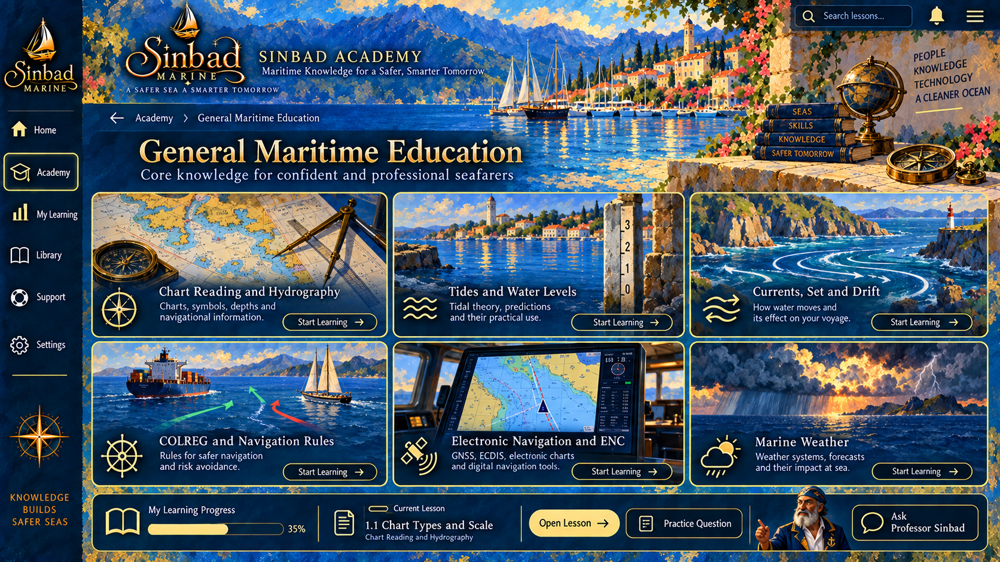
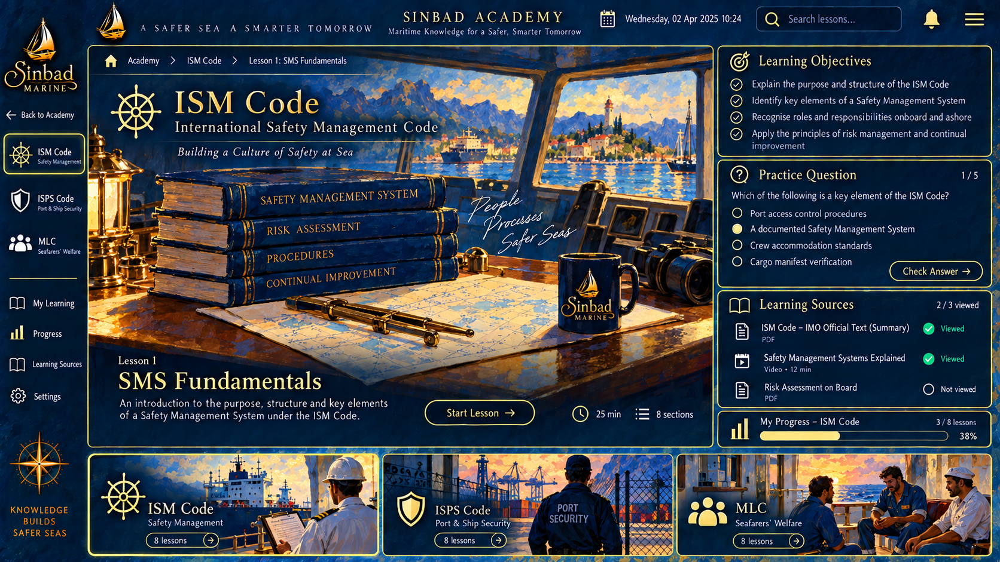
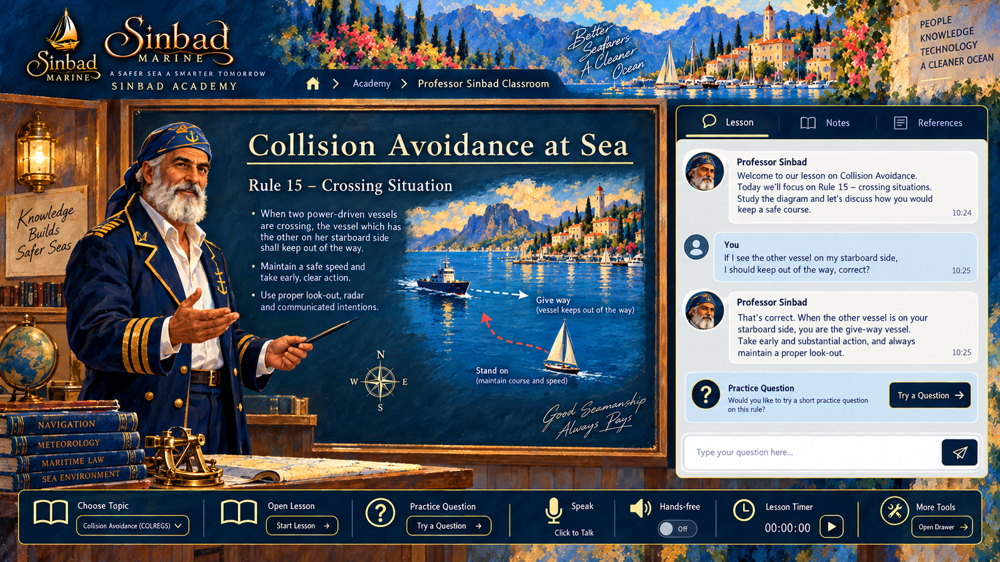

⛵
SINBAD
MARINE ACADEMY
☰ GOSS / GASM
STCW
GOC / ROC
General Maritime
ISM / ISPS / MLC
Language
English
Türkçe
Deutsch
← Back
⌂ Home

SINBAD Academy

01 · QUALIFICATIONS
GOSS / GASM
Deck · Engine · Electro-Technical · GOC / ROC

02 · SAFETY
STCW Training
Competence · drills · certification

03 · RADIO
GOC / ROC
Independent radio training within GOSS / GASM

04 · KNOWLEDGE
General Maritime
Navigation · charts · tides · seamanship

05 · COMPLIANCE
ISM / ISPS / MLC
Safety · security · labour standards

06 · CLASSROOM
Professor Sinbad
Ask · listen · study · practise
SINBAD MARINE ACADEMY
Maritime Classroom
LESSON TIME
00:00
Professor Sinbad's board